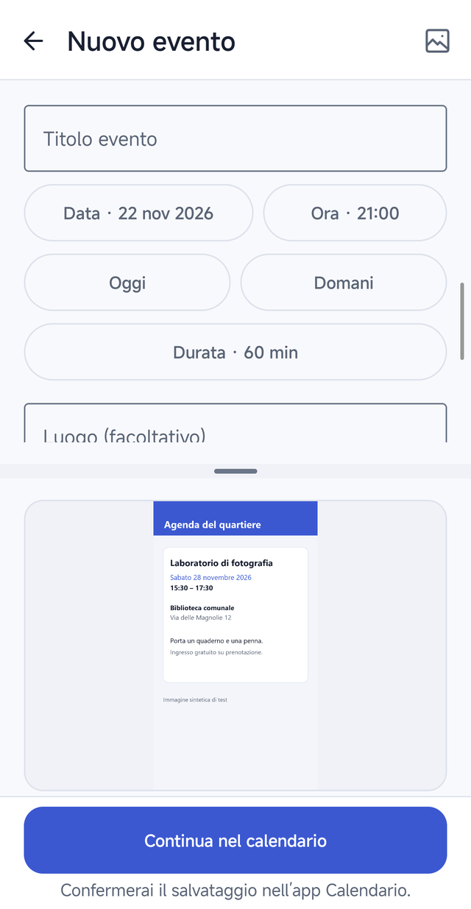
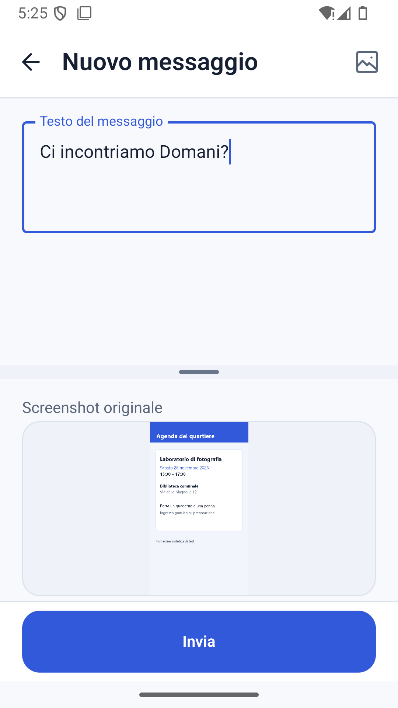

Da uno screenshot a un’azione
Crea un evento, programma un promemoria oppure scrivi una nota o un messaggio su Android tenendo lo screenshot aperto sotto il modulo.
Come funziona
Cosa puoi fare
Crea evento
Inserisci i dettagli e apri il calendario per confermare.
Ricordamelo
Scegli data e ora per programmare una notifica sul dispositivo.
Salva screenshot
Conserva una copia privata e cercala per titolo nell’Archivio.
Chiedi all’AI
Scegli un prompt e condividilo con l’immagine tramite un’app esterna.
Scrivi un messaggio
Componi il testo mentre consulti lo screenshot, poi scegli un’app di messaggistica come WhatsApp. L’app scelta riceve solo il testo.

Scrivi una nota
Digita nel pannello superiore e ingrandisci lo screenshot sotto. Salva nell’Archivio o apri la nota nel blocco note del telefono.
Come funziona
- Usa Scegli screenshot o condividi un’immagine dalla Galleria.
- Seleziona l’azione. Negli editor, trascina la maniglia per ridimensionare i pannelli.
- Compila e salva oppure conferma nell’app Calendario.
I tuoi contenuti restano sul dispositivo
Leggi tu lo screenshot. Screenshot2Action conserva una copia quando la salvi o la alleghi a un promemoria. Sei tu a scegliere quando condividere contenuti con un’altra app.
Screenshot2Action è destinata a persone di almeno 18 anni.